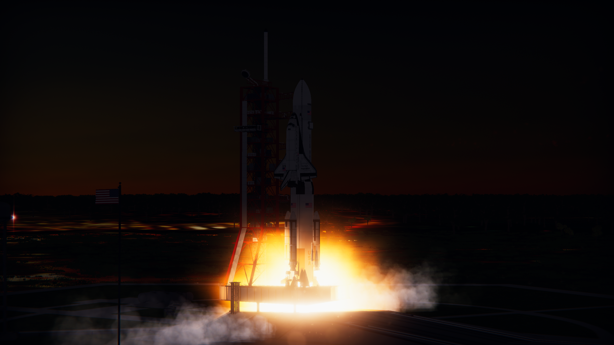
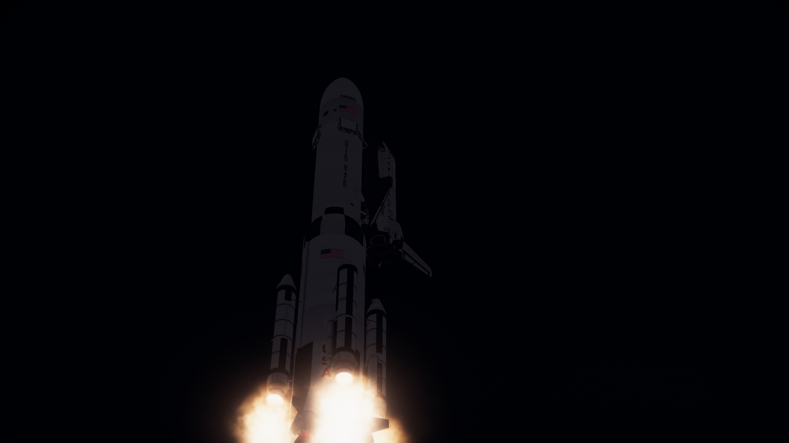
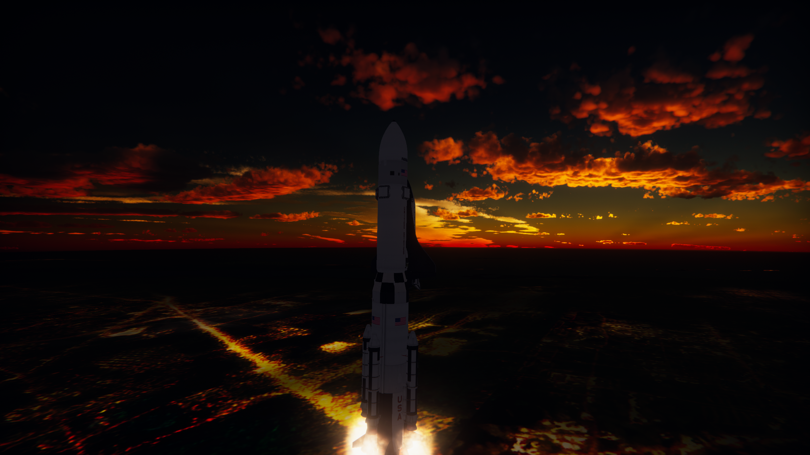
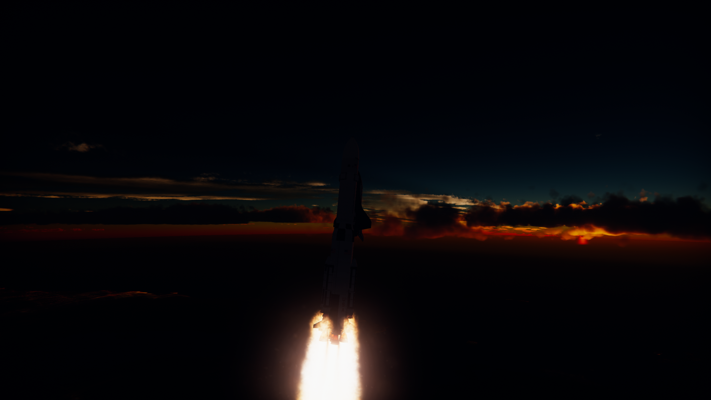
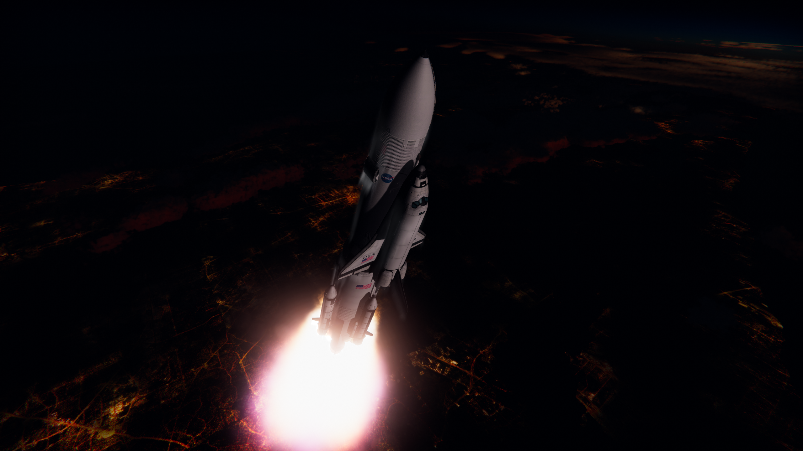
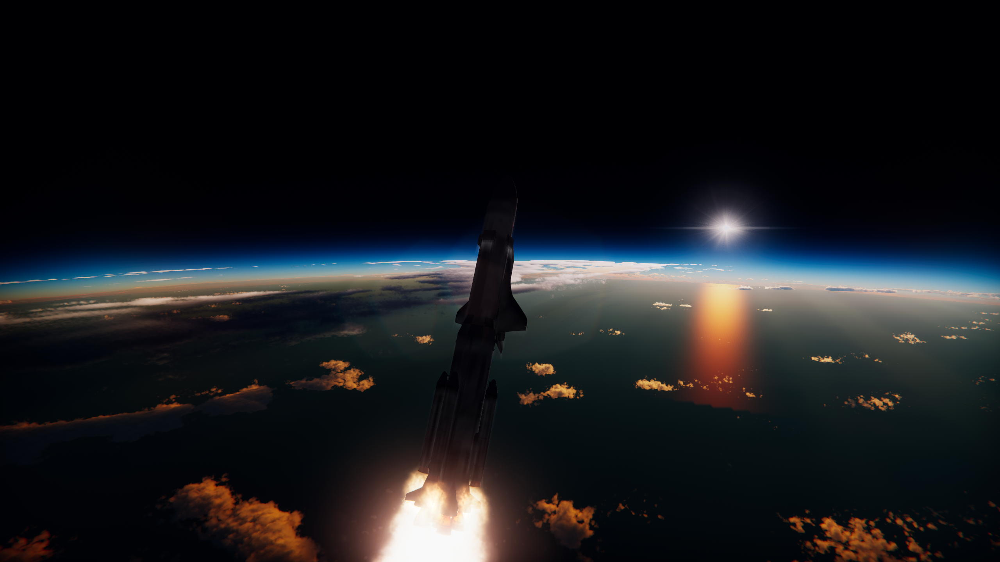
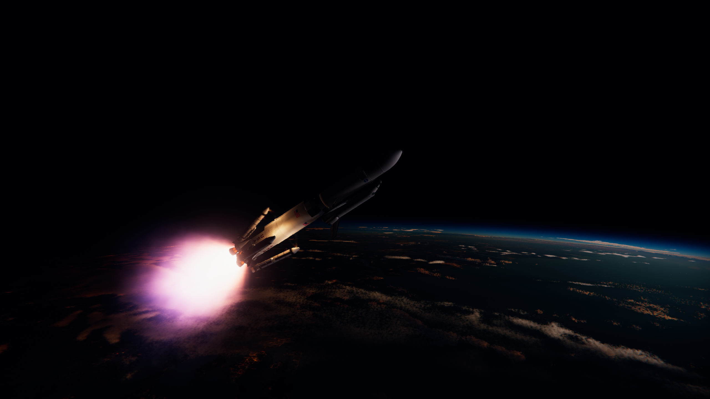
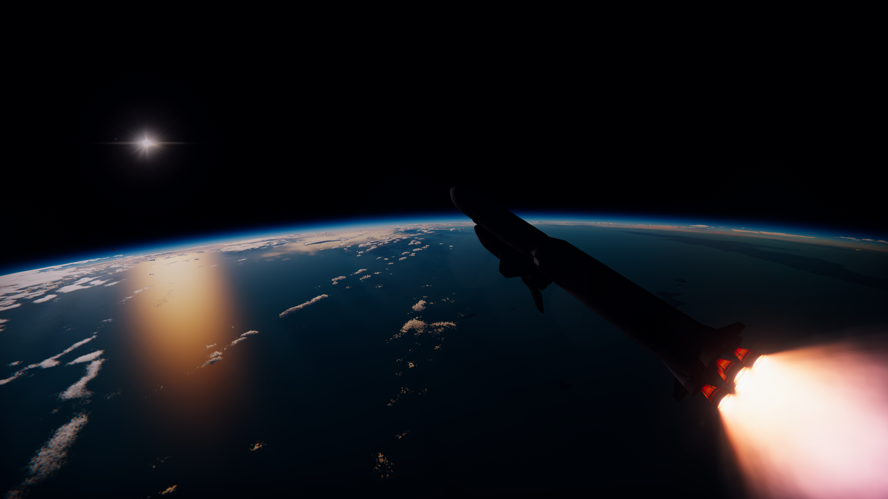
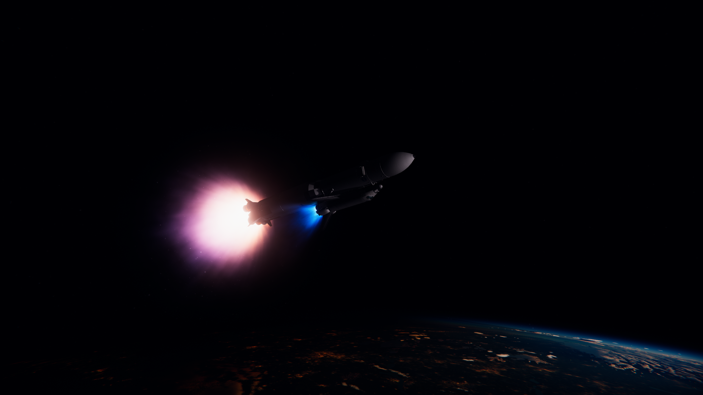
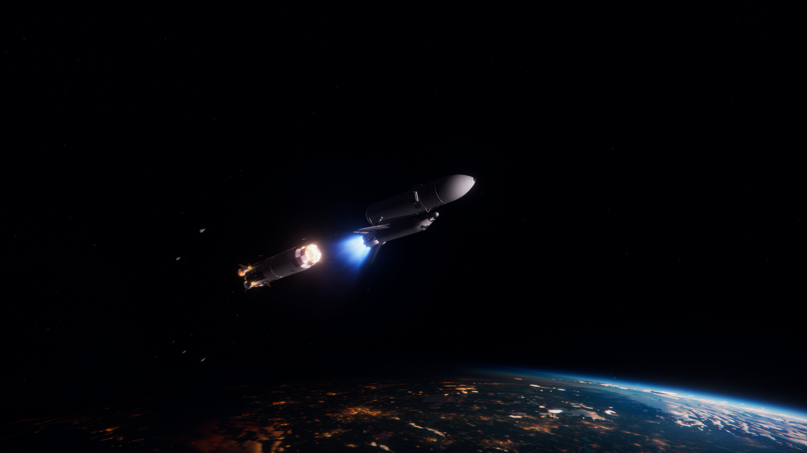

Cette Page est dédiée au Lunar Shuttle Launch System
Le LSLS
(nom work in progress)
Le LSLS utilises 5 motteurs F1 de la Fusée Saturn V,
avec une version plus longue du premiere etage de cette fusée.
Il y as aussi 4 boosters solides "UA1205" qui permettent a ce lanceur de quitter le pas de tire










Les panux sur les cotés de l'External Tank sont utilisé pour nullifier la perte d'hydrogène liquide,
le carburant des trois motteurs pricipaux.
Voici des photos prises par l'équipge lors de LSLS-1